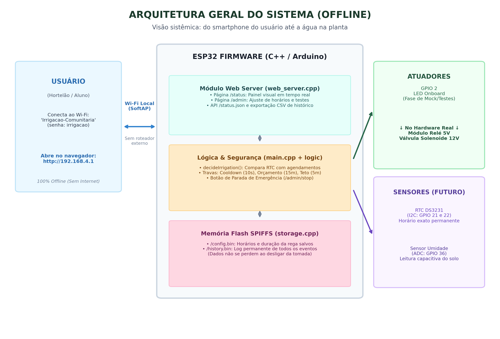
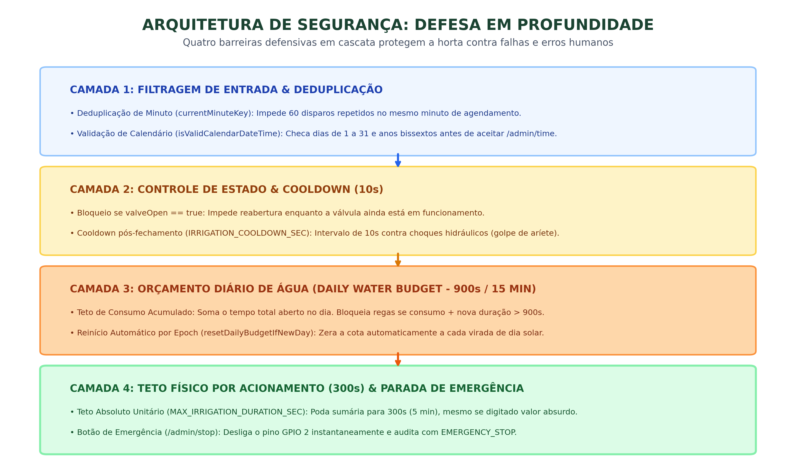
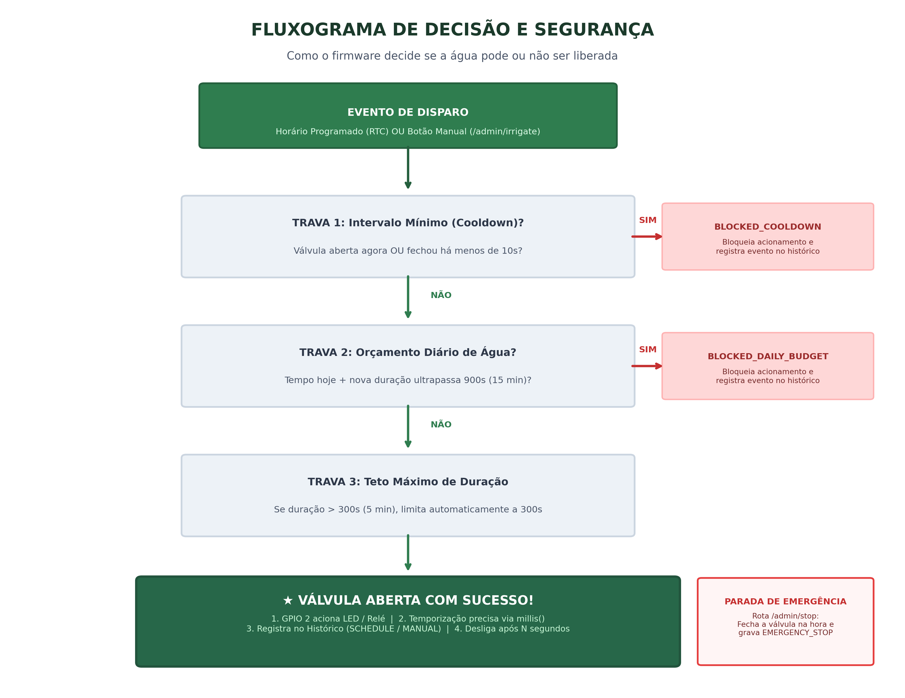
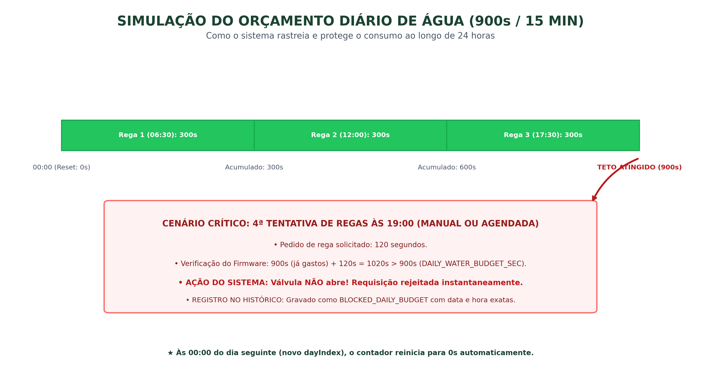
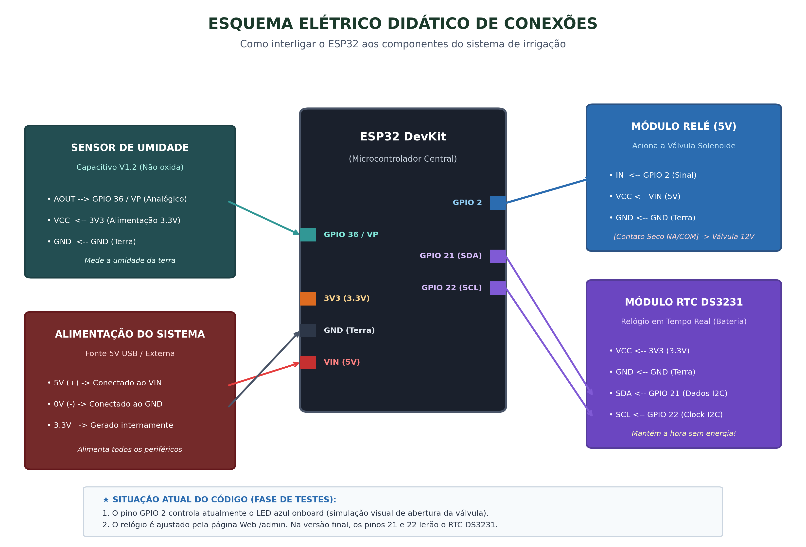

MECANISMOS DE SEGURANÇA E CONFIABILIDADE NO FIRMWARE ESP32
Arquitetura Defensiva em Quatro Camadas para Irrigação Automatizada e 100% Offline
O Desafio Operacional e a Missão Crítica
Por que a segurança proativa é a prioridade #1 deste firmware?
⚠️ O Cenário Físico da Horta
- Operação Desassistida: Funciona em campo aberto sem presença humana contínua.
- Ambiente 100% Desconectado: Sem internet, sem nuvem e sem alertas remotos por WhatsApp ou e-mail.
- Ausência de Sensor de Umidade Inicial: A irrigação depende exclusivamente do relógio, sem confirmação se o solo já está úmido.
💥 Riscos Críticos Mitigados
- Inundação e Erosão: Uma torneira travada aberta afoga raízes e esvazia a caixa d'água da comunidade.
- Golpe de Aríete: Choques hidráulicos por acionamento em rajada rompem conexões de PVC.
- Queima de Atuadores: Chaveamento repetitivo destrói a bobina magnética do relé.
Arquitetura Geral de Operação Offline
Do celular do hortelão até o acionamento físico nos canteiros

1. Camada do Usuário (Wi-Fi SoftAP)
O ESP32 cria sua própria rede Wi-Fi privativaIrrigacao-Comunitaria (192.168.4.1). Qualquer smartphone acessa o painel sem precisar de internet ou aplicativo.
2. Camada do Firmware (C++ Assíncrono)
Servidor Web não-bloqueante (web_server.cpp), lógica pura desacoplada (irrigation_logic.cpp) e persistência direta em flash SPIFFS (storage.cpp).
3. Camada de Atuadores (Isolamento Físico)
O acionamento é concentrado no pinoGPIO 2. Na bancada acende o LED onboard; na horta, atracará o módulo relé de 5V.
A Filosofia de Defesa em Profundidade
Quatro barreiras concêntricas protegem o fluxo de água em qualquer circunstância

Fluxograma Completo da Tomada de Decisão
Como o firmware decide se a água pode ou não ser liberada

🎯 Ponto Único de Entrada: attemptIrrigation()
Não importa se o pedido veio do relógio RTC ou do botão na página web: ambos passam obrigatoriamente pelo mesmo funil de decisão.
⛔ Recusa Explícita e Rastreável
Se qualquer barreira for violada, a válvula não abre e o firmware grava o evento no histórico (BLOCKED_COOLDOWN ou BLOCKED_DAILY_BUDGET).
⚡ Circuito de Emergência Independente
A rota/admin/stop opera de forma assíncrona, cortando o sinal elétrico do relé imediatamente.
Intervalo Mínimo: Cooldown de 10 Segundos
Proteção mecânica contra o golpe de aríete e rajadas na interface web
🌊 O Desafio Físico: Golpe de Aríete
Ao fechar uma válvula, a água em movimento causa um pico de sobrepressão nos canos. Se a válvula for religada instantaneamente, o impacto pode romper conexões de PVC e queimar o relé.📱 Proteção Contra Cliques Duplos na Web
Em conexões lentas, usuários costumam clicar várias vezes no botão "Irrigar agora". O cooldown absorve e descarta os cliques repetidos.🔔 Feedback na Interface (/admin)
Ao ser bloqueado, o usuário é redirecionado com?blocked=cooldown e visualiza uma mensagem em vermelho orientando a aguardar os 10s.
// Ponto crítico em src/main.cpp:
bool withinCooldown = hasIrrigatedBefore &&
millis() - lastIrrigationEndMs <
static_cast<unsigned long>(IRRIGATION_COOLDOWN_SEC) * 1000UL;
if (valveOpen || withinCooldown) {
// Registra a tentativa bloqueada no histórico
logHistoryEntry(false, 0,
TriggerReason::BLOCKED_COOLDOWN);
return {false, TriggerReason::BLOCKED_COOLDOWN};
}Orçamento Diário de Água (Daily Water Budget)
Cota cumulativa de 900 segundos (15 minutos) de válvula aberta por dia solar

💧 Cota Fixa Imutável (900s)
Declarada eminclude/Config.h. O sistema acumula cada segundo irrigado no dia. Ao atingir 900 segundos, nenhuma rega manual ou programada passa.
🔄 Reinício Automático por Época Solar
CalculadayIndex = time(nullptr) / 86400L. Quando o relógio atinge 00:00, o índice muda e a cota diária é zerada automaticamente para o próximo dia.
Teto Físico de Duração e Parada de Emergência
Limitação unitária e corte elétrico imediato em caso de emergência
🛡️ Trava 3: Teto Absoluto (5 min)
Mesmo que alguém digite '9999' minutos no painel web ou haja corrupção de memória flash, a funçãoopenValve() poda o valor sumariamente:
void openValve(uint16_t durationSec) {
if (durationSec > MAX_IRRIGATION_DURATION_SEC) {
durationSec = MAX_IRRIGATION_DURATION_SEC;
}
valveOpen = true;
valveOpenedAtMs = millis();
valveDurationSec = durationSec;
digitalWrite(VALVE_PIN, HIGH);
}🚨 Trava 4: Parada de Emergência Imediata
Se um cano se soltar, qualquer hortelão clica no botão vermelho na tela web. O pino vai para nível baixo em menos de 1 milissegundo:void stopIrrigation() {
if (valveOpen) {
closeValve();
logHistoryEntry(false, 0,
TriggerReason::EMERGENCY_STOP);
Serial.println("[irrigacao] parada acionada");
}
}Mecanismos de Resiliência Lógica e Tolerância a Falhas
Tratamento de bugs sutis e salvaguarda da memória interna
⏱️ Deduplicação de Minuto
Como a checagem ocorre a cada 1 segundo e o minuto dura 60s, o cálculo decurrentMinuteKey = hour * 60 + minute impede que o sistema tente disparar a válvula 60 vezes repetidas.
📅 Validação de Calendário
A função nativa Cmktime() converte datas inválidas (ex: 31/02 vira 03/03). Nossa função isValidCalendarDateTime() valida bissextos e rejeita datas malformadas com HTTP 400.
💾 Alerta de Falha de Flash
Se a partição SPIFFS falhar por desgaste ou corrupção, a variávelstorageFault ativa um banner vermelho em /status solicitando contato com o professor responsável.
Auditoria, Rastreabilidade e Exportação CSV
Registro permanente em memória não-volátil e prestação de contas à comunidade
| TriggerReason (Motivo) | Significado | Comportamento do Sistema |
|---|---|---|
SCHEDULE | Horário programado bateu | Válvula abriu pelo tempo configurado |
MANUAL | Acionamento via botão na web | Válvula abriu sob demanda do usuário |
BLOCKED_COOLDOWN | Intervalo mínimo violado | Válvula bloqueada. Tentativa registrada |
BLOCKED_DAILY_BUDGET | Cota diária de 900s atingida | Válvula bloqueada até a meia-noite |
EMERGENCY_STOP | Interrupção de emergência | Válvula fechada no mesmo milissegundo |
/history.bin é convertido dinamicamente para CSV com formato data_hora, irrigated, durationSec, reason, permitindo que a comissão da horta audite os dados no Microsoft Excel.
Do Mock de Testes ao Hardware Definitivo
Código desacoplado pronto para receber os periféricos físicos

1. Válvula / Relé (GPIO 2)
Atualmente pisca o LED onboard (mock). Basta conectar o pinoIN do relé de 5V no pino 2 para atracar a válvula solenoide real sem mexer no firmware.
2. Relógio RTC DS3231 (GPIO 21/22)
Barramento I2C para manter o relógio sincronizado sem energia, garantindo o cálculo exato do orçamento diário após apagões.3. Sensor de Umidade (GPIO 36 / VP)
Pino analógico reservado para leitura capacitiva. No futuro, a função puradecideIrrigation() usará esse dado para evitar regas em dias de chuva.
Um Firmware Robusto, Sustentável e Resiliente
Síntese dos resultados técnicos alcançados